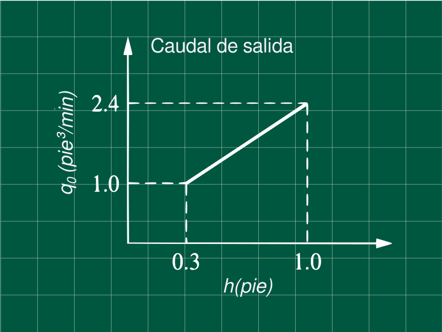

Problema 5.3 (Process Systems Analysis and Control - Coughanowr, LeBlanc)

Un tanque con un área seccional de 2 pie² opera en estado estacionario con un flujo de entrada de 2 pie³/min. El flujo de salida vs la altura del sistema son representados en la figura.
Encuentre:
-
La función transferencia H(s)/Q(s).
-
Si el flujo hacia el tanque se incrementa en de 2.0 a 2.2 pie³/min (paso unitario), calcule el nivel h, 2 minutos después del cambio.
DatosA=2 pie²qs=2 pie³/min
Obtención de la ecuación q0
Como se observa en la gráfica q0 es función de la altura y es una recta. Usando la fórmula de la ecuación de la recta que pasa por dos puntos tenemos (h1=0.3,q01=1) y (h2=1,q02=2.4) :
h−h1q0−q01=h2−h1q02−q01
h−0.3q0−1=1−0.32.4−1
q0=2h+0.4
Escribiendo las ecuaciones de balance
q−q0=dtdV
Pero q0=2h+0.4 y dV=Adh
q−(2h+0.4)=Adtdh (1)
Escribiendo el balance en estado estacionario
qs−(2hs+0.4)=0 (2)
Restando (1) con (2) para obtener las variables desviación y recordando que dh=d(h−hs), por ser hs constante.
q−qs−2(h−hs)+=Adtd(h−hs)
Q−2⋅H=AdtdH
Aplicando la tranformada de Laplacey sabiendo que H(t=0)=h−hs=hs−hs=0
Q(s)−2H(s)=A(sH(s)−H(t=0))
Q(s)−2H(s)=AsH(s)
Despejando
Q(s)H(s)=2s+21 (3)
Descripción de la perturbación
La perturbación sólo va a afectar el caudal de ingreso, esta puede ser representado por la variable desviación Q(t)
Q(t)=q−qs={2.0−2.02.2−2.0 pie³/minsi t<0si t>0
Q(t)={00.2 pie³/minsi t<0si t>0
Expresando la misma función con impulsos unitarios y aplicando la transformada de Laplace
Q(t)=0.2⋅u(t)
Entonces
Q(s)=s0.2
Resolviendo para h(t=2)
Reemplazando la expresión anterior en la ecuación (3)
H(s)=Q(s)⋅2s+21H(s)=s(2s+2)0.2
Operando para realizar la antitransformada
H(s)=s(2s+2)0.2+0.2s−0.2s=s(2s+2)0.1(2s+2)−s(2s+2)0.2s
H(s)=s0.1−(s+1)0.1
Aplicando la antitransformada L−1{ }
Recuerde L−1{s+k1}=e−kt
H(t)=0.1−0.1⋅e−t
Calculando h(t=2)
De la ecuación en estado estacionario
qs−(2hs+0.4)=0=>hs=0.8
Entonces
h(t=2)=H(t=2)+hs
h(t=2)=0.1⋅(1−e−2)+0.8
h(t=2)=0.8865 pie
Referencias
- Coughanowr, D. R.; LeBlanc, S. E. (2009). Process Systems Analysis and Control (3rd edition). McGraw-Hill. ISBN 978-0-07-339789-4.